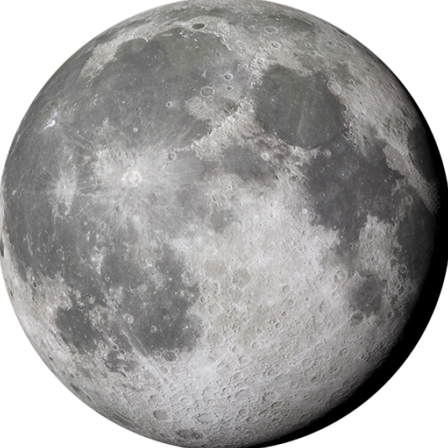

<section class="home-banner-area">
    <div class="banner__container">
        <div class="banner__wrapper">
            <div class="banner__content ">
                <h2>До луны и обратно</h2>
                <p>Задача организации, в особенности же курс на социально-ориентированный национальный проект позволяет оценить значение модели развития. </p>
                <div class="banner__actions">
                    <button class="btn btn__md">Подробнее о нас</button>
                    <button class="btn btn__secondary btn-icon btn-icon__rounded">
                        <svg width="24" height="24" viewBox="0 0 24 24" fill="none" xmlns="http://www.w3.org/2000/svg">
                            <path d="M12 22C17.5228 22 22 17.5228 22 12C22 6.47715 17.5228 2 12 2C6.47715 2 2 6.47715 2 12C2 17.5228 6.47715 22 12 22Z" stroke="#5101A6" stroke-width="2" stroke-linecap="round" />
                            <path d="M10 8L16 12L10 16V8Z" stroke="#5101A6" stroke-width="2" stroke-linecap="round" />
                        </svg>
                    </button>
                </div>
            </div>
            <div class="banner-img col-lg-5 col-md-5 align-self-end">
                
            </div>
        </div>
    </div>
</section>